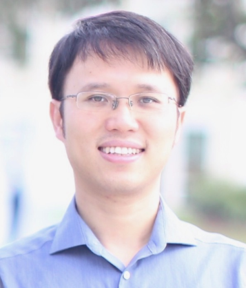

|
Fuyong Xing, Ph.D.
Assistant Professor
Department of Biostatistics and Informatics
Colorado School of Public Health
University of Colorado Anschutz Medical Campus
13001 E 17th PI
Aurora, Colorado 80045, USA
Email: fuyong.xing{at}ucdenver.edu
|
Biosketch
Fuyong Xing is an Assistant Professor in the Department of Biostatistics and Informatics at Colorado School of Public Health, University of Colorado Denver | Anschutz Medical Campus. He received his Ph.D. in Electrical and Computer Engineering at University of Florida, M.S. from Rutgers University-New Brunswick and bachelor's degree from Xi'an Jiaotong University. His research focuses on medical image computing and imaging informatics.
He is looking for students who are interested in medical image analysis. Please feel free to contact him if you are interested. Students from the Department of Biostatistics and Informatics as well as other departments (e.g., Computer Science and Engineering, Bioengineering, etc.) are always welcome.
News
- August 2019: A paper is accepted to BMC Bioinformatics.
- June 2019: A paper is accepted to MICCAI 2019.
- April 2019: I receive an NIH R21 grant as a PI.
- April 2019: A paper (collaborated with Drs. Zhang and Yang) is accepted to Nature Machine Intelligence.
- February 2019: A paper is accepted to IEEE Transactions on Biomedical Engineering.
Teaching
- Introduction to Biomedical Image Analysis, Spring 2019
Honors and Awards
- NIH R21 Grant, National Institutes of Health (NIH), 2019
- Outstanding International Student Award, University of Florida, 2016
- Runners Up Young Scientist Awards, the 18th International Conference on Medical Image Computing and Computer Assisted Intervention (MICCAI), 2015
- National Institutes of Health (NIH) Travel Awards, the 12th IEEE International Symposium on Biomedical Imaging (ISBI): From Nano to Macro, 2015
- MICCAI Student Travel Awards, the 16th International Conference on Medical Image Computing and Computer Assisted Intervention (MICCAI), 2013
Professional Activities
Journal Reviewer
- IEEE Transactions on Medical Imaging
- IEEE Transactions on Biomedical Engineering
- IEEE Transactions on Image Processing
- IEEE Transactions on Neural Networks and Learning Systems
- IEEE Journal of Biomedical and Health Informatics
- IEEE Transactions on Industrial Informatics
Conference/Workshop Reviewer
- The International Conference on Medical Image Computing and Computer Assisted Intervention (MICCAI), 2014-2019
- The IEEE Conference on Computer Vision and Pattern Recognition (CVPR), 2018-2019
- The IEEE International Conference on Computer Vision (ICCV), 2019
- The IEEE International Symposium on Biomedical Imaging (ISBI), 2018-2019
- The Proceedings of the Neural Information Processing Systems (NIPS) Conference, 2016
- The High Performance Computing for Biomedical Image Analysis Workshop associated with the 16th International Conference on Medical Image Computing and Computer Assisted Intervention (HPC-MICCAI), 2013